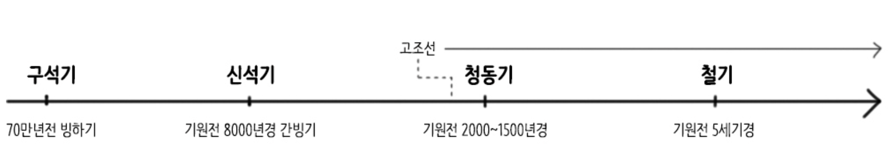
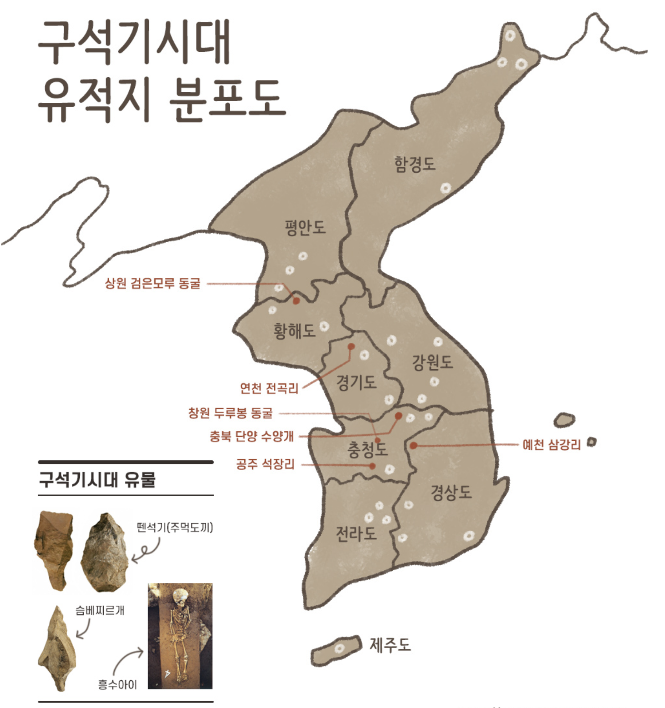
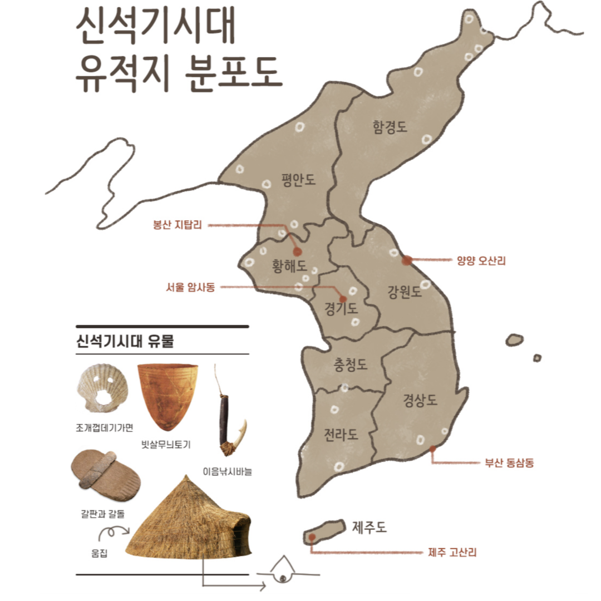
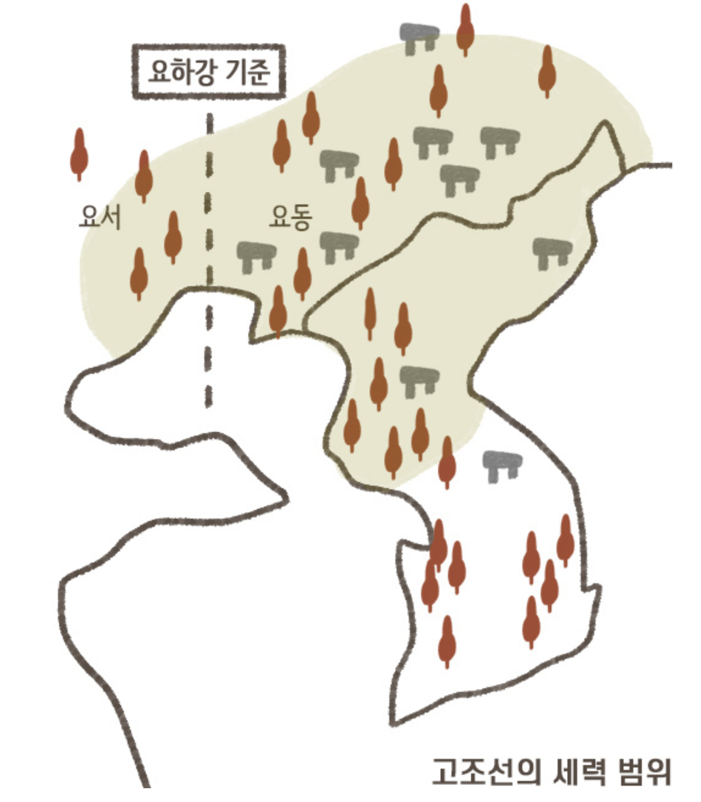
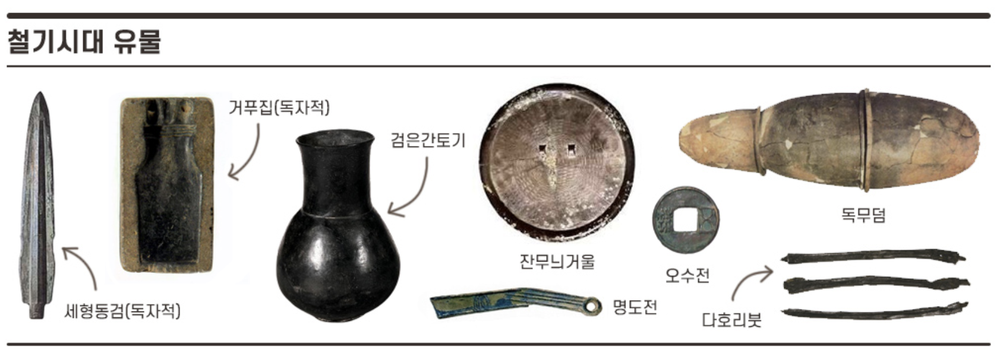

선사시대의 흐름
※ 참고 : 기원전(B.C)과 기원후(A.D)를 나누는 기준은 예수 그리스도의 탄생을 기점으로 한다.
(예수가 탄생한 해는 0년이 아니라 기원후 1년이라고 함)
구석기 시대 (무리 사회)
구석기시대
약 70만년 전(빙하기)
사회 : 무리 사회, 평등 사회, 이동 생활
생활 : 사냥, 채집, 어로 > 막집(강가), 동굴 거주
도구 : 불 사용, 가죽옷, 뼈도구, 뗀석기(긁개, 밀개, 찌르개, 아슐리안 주먹도끼), 슴베찌르개(후기 구석기)
예술 : 고래와 물고기를 새긴 조각 예술품(사냥감의 풍요와 번성)
유적지 : 연천 전곡리, 단양 수양개, 공주 석장리, 청원 두루봉 동굴(흥수아이), 상원 검은모루 동굴, 예천 삼강리
※ 흥수아이란? 한반도에서 발견된 대표적인 구석기 시대의 유골로 발견자인 김흥수씨의 이름을 따서 '흥수아이'라고 부른다. 약 4만 년 전에 살았던 6살 정도의 어린아이로 추정되는 유골 주변에는 흥미롭게도 여섯 종류의 꽃가루가 채집되었고, 시신 위에 고운 흙을 뿌린 흔적과 국화꽃 가루가 발견되었다는 점을 통해 선사시대임에도 죽은 자를 위한 애도 의식을 치렀던 구석기시대의 장례문화를 확인할 수 있다.

※ 구석기시대의 유적지는 전국적으로 분포되어 있다.
※ 충북 단양 금굴은 우리나라의 가장 오래된 구석기 유적지가 발견된 곳이다.
※ 연천 전곡리에서 발견된 동아시아 최초 '아슐리안형 주먹도끼'는 그동안 서구권에서만 발견되었고, 동아시아 지역에서는 볼 수가 없었는데 그래서 모비우스라는 학자는 이른바 "동아시아는 열등하다"는 것을 의미했던 '모비우스 학설'을 내세웠으나 연천 전곡리에서 주먹도끼가 발견된 이후 이 가설은 사실상 폐기가 되었다.
신석기 시대 (부족 사회)
신석기시대
기원전 8000년경(간빙기)
사회 : 평등사회, 씨족사회(부족사회), 정착 생활
생활 : 농경, 목축의 시작(신석기 혁명) > 밭농사(조, 피, 수수), 움집(중앙 화덕 형태의 반지하 가옥, 강가나 바닷가 근처 거주)
도구 : 간석기(갈판과 갈돌), 가락바퀴(방추자)와 뼈바늘(그물이나 의복 제작), 이음 낚싯바늘
예술 : 조개껍데기 가면, 치레 걸이
토기 : 이른 민무늬 토기 >덧무늬 토기 > 빗살무늬 토기의 순서로 토기 발전
신앙 : 애니미즘(자연물과 정령 숭배), 토테미즘(동물 숭배), 샤머니즘(주술 숭배)
유적지 : 서울 암사동, 부산 동삼동(패총), 양양 오산리, 황해 봉산 지탑리, 제주 고산리, 강원 고성 문암리

※ 신석기시대의 유적지는 주로 해안이나 강가에 분포되어 있다.
※ 강원 고성 문암리는 동아시아 최초 신석기시대의 밭으로 추정되는 유적이 발견된 곳이다.
청동기 시대 (국가 시작)
청동기시대
기원전 2000~1500년경
(*고조선의 형성)
사회 : 계급의 출현(족장의 출현)
생활 : 배산임수의 집단 취락, 지상 가옥화(가장자리 화덕 형태의 직사각형 지상 가옥), 벼농사 시작(쌀, 잉여 생산물로 인한 사유재산 발생), 외부 침입에 대비해 목책(나무 울타리)과 환호(도랑) 설치
도구 : 반달 돌칼(간석기), 비파형 동검, 거친 무늬 거울, 청동 방울, 농경 무늬 청동기
토기 : 미송리식 토기(손잡이O), 송국리형 토기(손잡이X), 붉은 간 토기
유적지 : 부여 송국리, 여주 흔암리, 울주 검단리, 고인돌(유네스코 세계문화유산), 돌널무덤
※ 청동기 시대에는 청동이 귀했기 때문에 여전히 석기 농기구를 사용하고 있었다.
※ 고인돌과 비파형 동검, 미송리식 토기의 분포지를 통해 '고조선'의 세력 범위를 확인할 수가 있다.
※ 거푸집(용범)은 후기 청동기부터 사용된 흔적이 있다.

우리나라 최초의 국가 <고조선>
(B.C 2333년 ~ B.C 108년경까지)

- 제정일치(단군인 제사장과 과 왕검인 군장이 일치된 사회)
- 홍익인간(널리 사람을 이롭게 한다는 이념)
- 선민사상(하늘에 선택받은 부족, 환웅)
- 토테미즘(곰 부족, 호랑이 부족)
- 농경사회
- 범금 8조법(현재 3개의 조항만 전해짐)
한사군 설치 이후 60여 조항으로 증가(엄한 율령, 풍속 각박)
단군 조선(2333년~) : 청동기, 전국 7웅 중 하나인 연나라와 대립(대동강 유역으로 중심지 이동), 준왕과 부왕의 강한 왕권(왕 아래 상, 경, 대부, 대신, 장군 등 관직 설치)
위만 조선(2C~) : 본격적인 철기 수용, 활발한 정복 사업으로 진번과 임둔 등 주변 지역 복속, 한나라와 중계무역(이익 독점), 조.한 전쟁(왕검성 함락) > 고조선 멸망(B.C 108)
※ 중국 《사기》 조선전에는 위만이 망명했을 때 상투를 틀고 동쪽으로 달아났다고 적혀있다. 또한, 위만은 왕이 되고서도 조선이라는 국호를 유지했다는 점을 근거로 들어 위만을 조선 계통의 연나라 사람(동이족)으로 보고 있다.
고조선의 성장부터 멸망까지 요약정리(B.C 2333년 ~ B.C 108년)
1. 단군왕검 고조선 건국(B.C 2333) → 2. 연나라 진개의 침략(요동 지역 상실, 대동강 유역으로 중심 이전) → 3. 부왕과 준왕의 강한 왕권 등장(상, 대부, 장군, 박사 등의 관직 설치) → 4. 진.한 교체기에 연나라에서 위만 고조선으로 망명(철기 문화 수용) → 5. 위만이 준왕을 몰아내고 위만조선 건설(B.C 194)(준왕은 남하하여 진국 건설) → 6. 진번과 임둔 복속(위만의 활발한 정복 활동) → 7. 진국과 한나라 사이 중계무역으로 이익 독점 → 8. 우거왕과 뜻이 맞지 않자 조선상 역계경이 무리를 이끌고 진국으로 남하 → 9. 한무제 우거왕 때 왕검성(수도) 공격 → 10. 고조선 멸망(B.C 108) → 11. 한나라가 고조선 지역에 한 4군 또는 한 군현 설치(낙랑군, 진번군, 임둔군, 현도군)
※ 고조선이 기록된 문헌 참고
고려 : 《삼국유사》 : 일연 (충렬왕 1282년) * 한국사 중 고조선에 관한 기록이 최초로 등장
고려 : 《제왕운기》 : 이승휴 (충렬왕 1287년) * 발해사를 한국사로 인식한 최초의 역사서
조선 : 《세종실록지리지》 : 춘추관 (단종 1454년)
조선 : 《응제시주》 : 권람 (세조 1462년)
조선 : 《동국여지승람》 : 노사신 (성종 1481년)
조선 : 《동국통감》 : 서거정 (성종 1484년) * 단군을 민족의 시조로 제시
조선 : 《동사각목》 : 안정복 (정조 1778년)
조선 : 《표제음주동국사략》 : 유희령 (조선 중종)
중국 : 사마천의 《서기》, 《산해경》 등
번외로 넣은 철기시대
철기시대
기원전 400년경(5세기) ~
사회 : 여러 연맹 왕국의 등장(부여, 고구려, 옥저, 동예, 삼한), 정복활동이 활발하게 전개됨
생활 : 중국과의 교류(명도전 / 반량전 / 오수전 / 다호리 붓(한자), 현악기, 덧널무덤, 독무덤, 널무덤(토광묘)
도구 : 세형동검(한반도 독자적 청동기 문화), 잔무늬거울, 거푸집, 철제 농기구 등장(쟁기, 쇠스랑 등)
토기 : 민무늬 토기, 덧무늬 토기, 검은 간 토기
예술 : 울주 대곡리 반구대 암각화, 경북 고령 양전동 바위그림
※ 철기 시대에 우경이 시작되었고, 소를 이용한 깊이갈이가 일반화되기 시작했다.
(삼국사기를 통해 신라 지증왕 때 우경 시작을 확인함)
